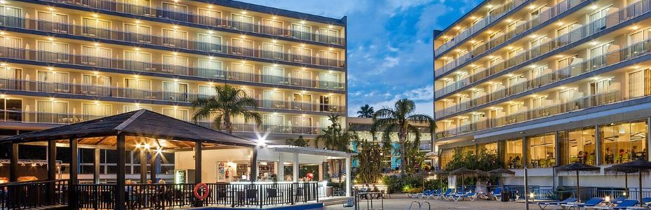

Que entenem per turisme?
El turisme es refereix a les activitats que les persones realitzen quan viatgen
i visiten llocs fora del seu entorn habitual ja sigui per oci, negocis, educació
o altres fins. Aquestes activitats poden incloure l'allotjament en hotels o altres
establiments, la visita a atraccions turístiques com monuments, parcs temàtics o museus,
la participació en activitats recreatives com excursions, senderisme o esports, així com
la immersió en la cultura local a través de la gastronomia, les festes tradicionals,
la música i altres formes d'expressió cultural. En general, el turisme implica viatjar
per a gaudir de noves experiències i coneixements fora del context quotidià.
Salou: Troba el Viatge, Descobreix l’Història
Salou és un municipi ubicat a la Costa Daurada, a la província de Tarragona,
Catalunya. Amb una ubicació privilegiada al litoral mediterrani, el municipi
en qüestió es troba a aproximadament 10 quilòmetres al sud de Tarragona i a uns
110 quilòmetres al sud-oest de Barcelona. Aquesta proximitat a dues grans ciutats
catalanes, juntament amb la seva accessibilitat a través de l'autopista AP-7, la
carretera N-340 i la línia ferroviària, fa que sigui una destinació molt accessible
tant per a turistes nacionals com internacionals.
Històricament, Salou ha estat una zona de gran importància estratègica i comercial.
Amb el pas dels segles, el terme municipal ha evolucionat d'una petita vila de pescadors
a una destinació turística de renom internacional. Actualment, Salou és coneguda com
la capital de la Costa Daurada, un títol que reflecteix la seva prominència com a centre
turístic. Les seves platges, els serveis i les instal·lacions que ofereix permeten posicionar
el municipi com un indret turístic molt favorable. També cal destacar la influència del
Port Aventura World el qual ha permès atraure milions de visitants cada any amb les
seves diverses àrees temàtiques i parcs aquàtics.
En termes de serveis, Salou ofereix una àmplia gamma d'allotjaments, des de luxosos
hotels fins a càmpings i apartaments turístics, així com una variada oferta gastronòmica
la qual inclou des de cuina internacional fins a plats típics de la cuina mediterrània i
catalana. La ciutat també disposa d'infraestructures modernes, incloent-hi centres de salut,
zones comercials i instal·lacions esportives. L'iniciativa Salou Travel Hub (STH) busca
potenciar i/o promocionar al màxim les diferents destinacions turístiques que podem trobar
al municipi (s’entra en detall a l’apartat de “projecte”).